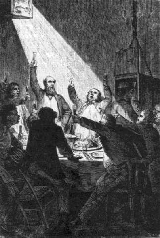

Capítol XVI
EL COLUMBIAD
Havia reeixit l'operació
de la fosa? Hom no ho podia jutjar sinó per simples conjectures. Això
no obstant, tot portava a creure en l'èxit, ja que el motllo havia absorbit
la massa sencera del metall liquat en els forns. Fos com fos, durant molt de
temps havia d'ésser impossible d'assegurar-se'n directament.
En efecte, quan el major Rodman va fondre el seu canó de cent seixanta
mil lliures, necessità més de quinze dies perquè tingués
lloc el refredament. Llavors, ¿quant de temps, el monstruós Columbiad,
coronat de remolins de vapors i defès per la seva calor intensa, anava
a amargar-se als ulls dels seus admiradors? Era difícil de predir.
La impaciència dels membres del Gun-Club va passar durant aquest temps
per una dura prova. Però no s'hi podia fer res. A J.-T. Maston, de poc
li vingué com no es rosteix endut per la seva abnegació. Quinze
dies després de la fosa, una immensa fumera s'enlairava encara en ple
cel, i la terra cremava als peus en un radi de dues-centes passes al voltant
del cim de Stone's-Hill.
Els dies passaven i les setmanes corrien una darrera d'altra. Cap mitjà
per a refredar l'immens cilindre i continuava essent impossible d'apropar-s'hi.
Era necessari esperar, i els membres del Gun-Club s'impacientaven.
-Som el 10 d'agost - digué un matí J.-T. Maston -. Quatre mesos
escassos ens separen del primer de desembre! Hem de treure el motllo interior,
reconèixer el calibre de l'ànima de la peça i carregar
el Columbiad, i tot això encara està per fer! No hi serem pas
a temps! No ens podem ni tan sols apropar al canó! Que potser no es refredarà
mai? Això sí que fóra un desengany cruel!
Hom procurà calmar l'impacient secretari sense arribar a aconseguir-ho.
Barbicane no deia res, però el seu silenci ocultava una sorda irritació.
Veure's absolutament detingut per un obstacle en què només el
temps podia justificar - el temps, enemic temible en aquelles circumstàncies
-, i estar a la seva discreció, era cosa dura per a un home de guerra!
Tampa Town després dels treballs
Tanmateix observacions quotidianes permeteren de constatar un cert canvi en
l'estat del terreny. Cap al 15 d'agost, els vapors projectats havien disminuït
notablement d'intensitat i d'espessor. Alguns dies després, el terreny
no exhalava més que una lleugera boirina, darrera bufada del monstre
reclòs en el seu fèretre de pedra. A poc a poc els estremiments
de terra vingueren a calmar-se i el cercle calòric es restringí.
Els més impacients dels espectadors pogueren, per fi, apropar-se. Un
dia, hom guanyà dues toeses; l'endemà quatre, i el 22 d'agost,
Barbicane amb els seus col·legues i l'enginyer pogueren prendre lloc
damunt la capa de ferro colat que fregava el cim de Stone's-Hill, un indret
molt saludable a ben segur, i on no estava permès de tenir fred als peus.
-Per fi! - cridà el president del Gun-Club amb un immens sospir de satisfacció.
Els treballs foren represos el mateix dia. Es procedí immediatament a
l'extracció del motllo interior a fi de desprendre l'ànima de
la peça, i el pic, el picot, la plantilla i les altres eines de terrejar
funcionaren sens descans. La terra argilenca i la sorra s'havien endurit en
gran manera sota l'acció de la calor, però amb l'auxili de les
màquines fou vençuda aquella mescla que encara cremava al contacte
de les parets de ferro fos. Els materials extrets, se'ls endugueren ràpidament
uns carros moguts per vapor, i es féu tot tan bé, la febre pel
treball fou tan gran, la intervenció de Barbicane tan insistent i els
seus arguments amb tanta força presentats en forma de dòlars,
que el 3 de setembre tot rastre del motllo ja havia desaparegut.

La celebració al Columbiad
Llavors començà tot seguit la feina d'allisar. Les màquines
foren instal·lades sens retard i funcionaren ràpidament amb l'ajuda
de potents allisadors que es menjaren de seguida totes les desigualtats de la
fosa. Algunes setmanes després, la superfície interior de l'immens
tub era perfectament cilíndrica i l'ànima de la peça tenia
un poliment complet.
Per fi, el 22 de setembre, no havent transcorregut encara un any de la comunicació
de Barbicane, l'enorme màquina rigorosament calibrada i en posició
absolutament vertical, segons fou comprovat per mitjà de delicats instruments,
estava a punt de funcionar. Només mancava esperar la Lluna, si bé
tots estaven segurs que no deixaria de comparèixer a la cita.
La joia de J.-T. Maston no conegué més límits. Ben poc
se n'hi faltà de fer una espantosa caiguda en enfonsar les seves mirades
en el tub de nou-cents peus. Sense el braç dret de Blomsberry, que el
digne coronel havia sortosament conservat, el secretari del Gun-Club, com un
novell Eròstrat, hauria trobat la mort en les profunditats del Columbiad.
El canó estava llest i no hi havia cap mena de dubte sobre la seva perfecta
execució. Així, el 6 d'octubre, el capità Nicholl, per
molt que li requés, pagà al president Barbicane la seva segona
aposta, i fou anotada en els seus llibres i a la columna d'ingressos una suma
de dos mil dòlars. Hom està autoritzat a creure que la ira del
capità fou duta als darrers límits i que fou causa que caigués
malalt. Així i tot, encara li quedaven tres apostes: una de tres mil,
una altra de quatre mil i una altra de cinc mil dòlars, i per bé
que en guanyés dos, el seu afer no seria tan dolent, sense ésser
excel·lent. Però el diner no entrava pas en els seus càlculs,
i l'èxit obtingut pel seu rival en la fosa d'un canó que no haurien
resistit planxes de deu toeses fou per a ell un cop terrible.
Des del 23 de setembre, el recinte de Stone's-Hill havia estat lliurement obert
al públic i el que fou l'afluència dels visitants es comprendrà
sense cap treball.
Innombrables curiosos, vinguts de tots els punts dels Estats Units, convergien
a la Florida. La ciutat de Tampa havia crescut prodigiosament durant aquell
any consagrat tot ell als treballs del Gun-Club. Competia llavors amb una població
de cent cinquanta mil ànimes. Després d'haver inclòs el
fort Brooke en una xarxa de carrers, ara s'estenia sobre aquella llengua de
terra que separa les dues rades de la badia d'Espíritu Santo. Nous barris,
noves places, tot un bosc de cases, havia crescut sobre aquelles platges, abans
desertes, a la calor del sol americà. S'havien fundat companyies per
aixecar esglésies, escoles, cases particulars, i, en menys d'un any,
l'extensió de la ciutat fou decuplicada.
Ja se sap que els ianquis han nascut comerciants. Allà on la sort els
llenci, des de la zona glacial a la zona tòrrida, cal que llur instint
per als negocis s'exerceixi útilment. Així s'explica per què
simples tafaners, gents vingudes a la Florida amb l'única finalitat de
seguir de prop els treballs del Gun-Club, es deixessin entusiasmar per les operacions
comercials a penes foren instal·lats a Tampa. Els navilis noliejats per
al transport del material i dels obrers havien donat al port una activitat sense
parió. Aviat, altres bastiments de tota forma i de qualsevol tonatge,
carregats de queviures, avituallaments, mercaderies, solcaren la badia i les
dues rades. Espaiosos despatxos d'armadors, oficines borsàries, s'establiren
a la ciutat, i la Shipping Gazette registrà cada dia noves arribades
al port de Tampa.
Mentre que les rutes es multiplicaven al voltant de la ciutat, aquesta, en consideració
de la prodigiosa creixença de sa població i del seu comerç
fou finalment relligada per un camí de ferro als Estats meridionals de
la Unió. Un ferrocarril enllaçà Mobile amb Pensacola, el
gran arsenal marítim del Sud. Després, d'aquell punt important,
el camí de ferro va dirigir-se a Tallahassee. Allí ja hi havia
un petit tros de via fèrria, llarg de vint-i-una milles, pel qual Tallahassee
es posava en comunicació amb Saint Marks, a la vora del mar. Aquell tren
va allargar-se fins a Tampa-Town, vivificant i desvetllant al seu pas comarques
mortes o sols adormides de la Florida central. Per tant, Tampa, mercès
a aquelles meravelles de la indústria degudes a la idea desclosa un bon
dia en el cervell d'un home, pogué prendre amb bon dret l'aire d'una
gran ciutat. Hom l'havia motejat "Moon-City"1,
i la capital de les Florides patia un eclipsi total, visible de tots els punts
de la terra.
Cadascú podrà comprendre, ara, per què la rivalitat fou
tan gran entre Texas i la Florida, i la irritació dels texencs quan es
veieren desbancats en llurs pretensions per l'elecció del Gun-Club. En
llur sagacitat previsora, havien comprès que un país podia guanyar
molt amb l'experiment proposat per Barbicane, i el bé que reportaria
una canonada semblant. Texas hi perdia un vast centre de comerç, camins
de ferro i un augment considerable de població. Tots aquests avantatges
requeien damunt d'aquella esquifida península floridenca, llençada
com una estacada entre les ones del golf de Mèxic i les onades de l'oceà
Atlàntic. D'aquesta faisó, Barbicane compartia amb el general
Santa Ana totes les antipaties de Texas.
I amb tot, encara que lliurada al seu frenesí comercial i a la seva impetuositat
industrial, la nova població de Tampa-Town tingué molt de compte
a no oblidar els interessants treballs del Gun-Club. Ben al contrari. Els més
minsos detalls de l'empresa, el més petit cop de picot, l'apassionaven.
Allò fou un anar i venir incessant entre la ciutat i Store's-Hill, una
precessó o, millor encara, una peregrinació.
Hom ja podia preveure que, el dia de l'experiment, l'aglomeració dels
espectadors es calcularia per milions, car ja venien de tots els punts de la
terra amuntegar-se en la tan estreta península de la Florida. Europa
emigrava a Amèrica.
Però convé dir també que fins allí la tafaneria
d'aquelles nombroses multituds que arribaven només havia estat escassament
satisfeta. Molts comptaven amb l'espectacle de la fosa, i no en veieren sinó
les fumeres. Allò era insuficient per als ulls àvids, però
Barbicane no volgué admetre ningú en aquella operació.
D'ací renecs, descontentament, murmuris. Fou blasmat el president i se'l
titllà d'absolutista. El seu procedir fou declarat "poc americà".
Fins i tot arribà a haver-hi un motí al voltant del clos de Stone's-Hill.
Però Barbicane, i això se sap, restà infrangible en la
seva resolució.
Ara bé, quan el Columbiad estigué llest del tot, calgué
obrir les portes del clos. Hauria tingut poca gràcia, a més, continuar
tenint les portes tancades, i pitjor hauria estat encara no acontentar els sentiments
públics. Barbicane obrí el clos a tothom qui vingués, però
això sí, endut pel seu esperit pràctic, resolgué
fer moneda a costa de la xafarderia pública.
Ja era molt això de poder contemplar l'immens Columbiad, però
davallar fins a les seves profunditats, heus aquí que això altre
semblava ésser per als americans el nec plus ultra de la felicitat en
aquest món. Per tant, no hi hagué un encuriosit que no volgués
donar-se la satisfacció de visitar l'interior d'aquell abisme de metall.
Aparells, suspesos per una càbria de vapor, permeteren als espectadors
de satisfer llur curiositat. Allò fou un desfici. Dones, criatures, vells,
tots es feren com un deure de penetrar els misteris fins al fons de l'ànima
del colossal canó. El preu del descens fou fixat a cinc dòlars
per persona, i, malgrat el seu encariment, durant els dos mesos que precediren
l'experiment, l'afluència de visitants permeté al Gun-Club de
fer un calaix de prop de cinc-cents mil dòlars.
No cal dir que els primers visitants del Columbiad foren els membres del Gun-Club,
preferència justament reservada a la il·lustre assemblea. Aquesta
solemnitat tingué lloc el 25 de setembre. En una caixa d'honor davallaren
el president Barbicane, J.-T. Maston, el major Elphiston, el general Morgan,
el coronel Blomsberry, l'enginyer Murchison i altres distingits membres del
cèlebre Club. En total, deu persones. Es deixava sentir encara molta
calor al fons d'aquell llarg tub de metall. Hom s'hi ofegava un xic! Però
quina joia! Quin encís!
Una taula de deu coberts havia estat parada sobre el massís de pedra
que suportava el Columbiad, aclarit a giorno per un doll de llum elèctrica.
Exquisits i nombrosos plats que semblaven baixar del cel vingueren a col·locar-se
successivament davant dels convidats, i els millors vins de França s'abocaren
profusament durant aquell esplèndid àpat servit a nou-cents peus
sota terra.
El festí fou molt animat i àdhuc molt xardorós. Es bescanviaren
nombrosos toasts. Hom brindà pel globus terrestre, pel seu satèl·lit,
pel Gun-Club, per la Unió, per la Lluna, per Febe, per Diana, per Selene,
per l'astre de les nits, per la "pacífica missatgera del firmament"!
Tots aquests hurres, duts per les ones sonores de l'immens tub acústic,
arribaven com un tro a la seva extremitat, i la multitud arrenglerada entorn
de Stone's-Hill s'unia de cor i amb crits als deu convidats amagats al fons
del gegantí Columbiad.
J.-T. Maston ja no podia aguantar-se. Si cridà més que no gesticulà,
si begué més que no menjà, és cosa bon punt difícil
de dir. En tot cas, hauria cedit el seu lloc per un imperi, "no, malgrat
que el canó, carregat, encebat i fent foc a l'instant, hagués
d'enviar-lo fet a trossos pels espais planetaris!".